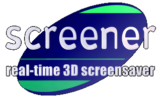
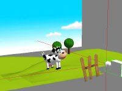

What is Screener :
Screener is the first high-quality real-time 3D screen saver for the Mac.
Anybody knows that screen savers are not really useful, but they are nice. What about a new generation of screen savers?
You're tired of seeing always the same flat 2D screen saver? You've got a brand new G3 or G4 and want a screen saver that really uses the power of the ATI Rage 128? What about having cool animations that will blow your PC friends still using the Windoze standard screen saver with that jerky 3D text animation?
The answer is Screener: Screener is the only real-time 3D screen saver with awesome performances for the Mac. All you need is a PowerMac with 3D acceleration.
And most of all, Screener is freeware!
Screener modules :
The Screener screen saver is provided with a bunch of amazing screen modules, including:
|
The exclusive French Touch cow in a typical French landscape! |
A space ship lost in the middle of an asteroid field. |

A walking Mech straight out from the upcoming Lords of Steel game. |
Emily, the first 3D animated bunny for your desktop. Ooooh, sooo sexy! |
Create your own modules!
You can easily create your own screen saver modules using Infinity Model Builder, French Touch 3D edtiting program. The possibilities are infinite but only limited by your imagination: you can for example create a module containing an animated version of the logo of your company.
The French Touch cow on stage
System requirements :
To be able to use Screener, you need:
• a PowerMacintosh - a G3 (all G3 Power Macintoshes have ATI 3D chips on board) or a PowerMacintosh with a 3D accelerator card is highly recommended.
• System 7.1 or later.
• QuickDraw 3D Rave.
• the Appearance Manager.
Version history :
Version 2.2
Support for the latest version of the Infinity 3D Engine (audio shaders...).
Support for audio rendering.
The DriverServicesLib is no more required.
Version 2.1
Support for the latest version of the Infinity 3D Engine (light FX, particle systems...).
Support for the latest MetaFile file format.
Improved preferences dialog.
Version 2.0
Brand new rendering engine
Support for the MetaFile file format
Version 1.2
Sequencer now uses OpenTransport timing services
Brand new sequencer which includes Dropped frames support
Support for Fusion 3.1 file format
Version 1.1
Support for Fusion 3.0 format: vertex per vertex transparency, 32 Bits textures wth 8 Bits alpha, skeletons...
Version 1.0
First public release.
Download Screener now!
| Package name |
Package content
|
Size |
| Screener 2.2 |
Screener application, users manual, a bunch of screen saver modules and the version history.
|
650 Kb |
You need StuffIt Expander to decompress the archive.
You must agree to the license located at the end of the users manual before starting to use Screener.
Screener may be freely distributed by online services, bulletin boards, shareware collection CDs or non-profit user groups, as long as it is not modified. This software may not be included in any commercial package without the authorization of French Touch.
Other related softwares :
To create screen saver modules for Screener, you need to download the real-time 3D editor from French Touch: Infinity Model Builder. It's a free program and is available on the Model Builder web site:
http://www.french-touch.net/model_builder.
|